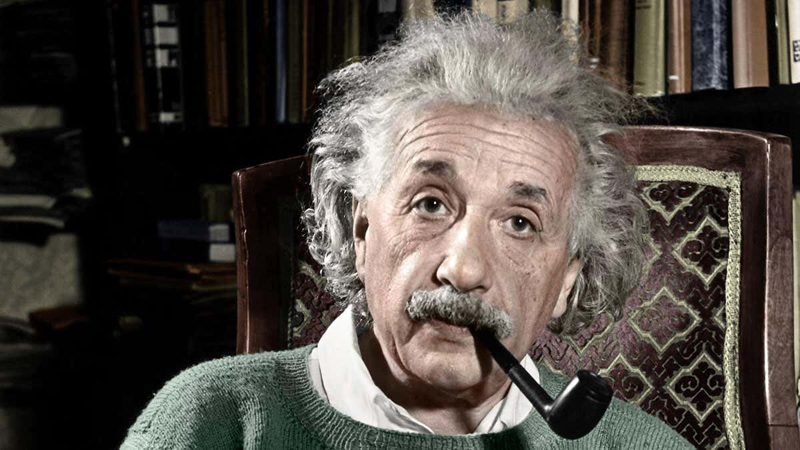

eistein in zijn bureau.
Einstein werd vooral bekend vanwege de twee relativiteitstheorieën: de speciale relativiteitstheorie van 1905 en de algemene relativiteitstheorie van 1915 en volgende jaren, die de speciale relativiteitstheorie uitbreidt door ook plaats in te ruimen voor de zwaartekracht. Hij publiceerde meer dan 300 wetenschappelijke en meer dan 150 niet-wetenschappelijke werken. In zijn latere jaren schreef Einstein uitvoerig over filosofische en politieke onderwerpen. Hij wordt vaak samen met Max Planck beschouwd als de vader van de moderne natuurkunde. Hij droeg aanzienlijk bij aan andere deelgebieden van de natuurkunde: voor zijn verklaring van het foto-elektrisch effect ontving hij in 1921 de Nobelprijs voor de Natuurkunde en ook zijn beschrijving van de brownse beweging en de eerste fluctuatie-dissipatiestelling was een belangrijke doorbraak. Deze twee verklaringen en de speciale relativiteitstheorie publiceerde hij bovendien allemaal in zijn wonderjaar 1905. Verder werk omvat onder meer onderwerpen in de kwantummechanica, de theorie van de vaste stof, de nulpuntsenergie, de statistische mechanica, de kosmologie, de theorie van straling (fotonen, dualiteit van golven en deeltjes, kritische opalescentie en gestimuleerde emissie, de theorie achter de laser) en de veldentheorie. Een eenheid in de fotochemie draagt zijn naam, de einstein. Het chemisch element einsteinium is ook naar hem vernoemd, net als de Einsteinring in de astronomie en de Einsteincoëfficiënten in de optica. Albert Einstein werd in een liberaal-joodse familie in het Duitse Keizerrijk geboren, woonde later in Italië, Zwitserland en het toenmalige Oostenrijk-Hongarije voor hij terugkeerde naar Duitsland. Toen Adolf Hitler in 1933 in Duitsland aan de macht kwam, besloot Einstein zich in de VS te vestigen. In 1940 nam hij de Amerikaanse nationaliteit aan en deed afstand van zijn Duitse (hij behield wel de Zwitserse). Hij overleed op 18 april 1955 in Princeton aan een aneurysma. I do not carry such information in my mind since it is readily available in books. ...The value of a college education is not the learning of many facts but the training of the mind to think. Zoals Einstein ooit zei: If I had only one hour to save the world, I would spend fifty-five minutes defining the problem, and only five minutes finding the solution.
{kind=link}